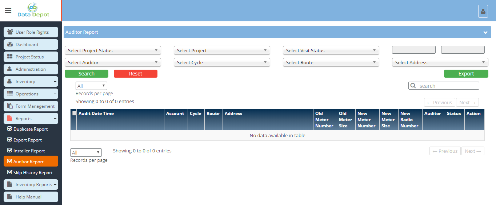
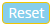
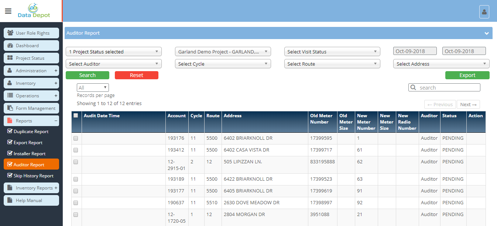
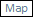
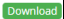
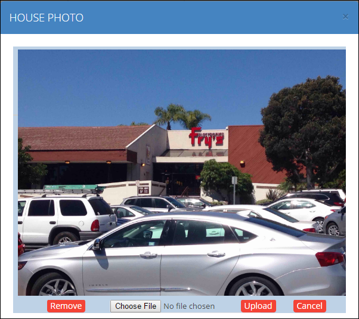
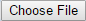
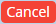
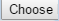

Auditor Report
- Audit Reports Module will display Auditor submitted visits from iPhone device.
- The functionality View Report, Edit Report, Single PDF, Multiple PDF, Download PDF will remain as it is for Installer Reports.
Screen: Initial Screen

Steps
- Initially all fields will be blanked.
- Select the project status from Project status dropdown.
- Select the Project Name from project dropdown.
- Start Date and End of Project is automatically populated in respective fields.
- Select Auditor from Auditor dropdown.
- Select the Cycle from Cycle dropdown.
- Multiple Cycles can be selected.
- All cycles can be selected by checking check-box from the dropdown.
- Select the Route from Route dropdown.
- Route dropdown is populated based on Cycles selected in cycle dropdown.
- Multiple routes can be selected.
- All routes can be selected by checking check-box from the dropdown.
- Select the Addresses from Address dropdown.
- Address dropdown is populated based on routes selected in route dropdown.
- Multiple Addresses can be selected.
- All Addresses can be selected by checking check-box from the dropdown.
- Click
 button to get all form's data according to search criteria selected.
button to get all form's data according to search criteria selected.
- Each submitted form is displayed as a row.
- Click on
 button to export the report to PDF file.
button to export the report to PDF file.
- Click on

button to reset all fields.

- Multiple forms can be exported.
- Select the forms you want to export by checking the check box in the first column of respective form row.
- Click on the button.
- Forms and their details is displayed in a new tab in the browser one after the other as shown below.
- If the form has Location/GPS field, then Map of the location visited can be viewed.
- To view Map, click on the

link present on the form.
- Map will be downloaded as an image.
- All the images present in the form can be seen in the form itself.
- Audios can be heard through Audio Player.
- Click on the Audio link.
- Audio player will be opened.
- Videos can be viewed on the browser.
- Click on the Video link.
- Video player will be opened in the browser.
- Click on the

button to download PDF containing these forms.
2. Click on button of respective form to edit the details of the form sent by auditor.
- Form will be displayed as shown below
- All the details filled by installer are displayed in respective fields.
- Edit the field you require.
- To Edit any image
- Click on button.
- Current image will be opened in a pop up

- To change the image, click on

button.
- Select the path of the image you want to upload from the windows browser.
- Click on button to upload the selected image.
- Old image will be replaced by new image.
- To remove the image, click on button.
- Click on

button to close the pop up.
- To Edit any Audio
- Click on button.
- Current Audio will be opened in a pop up
- Audio can be heard by clicking on play button.
- To change the audio, click on button.
- Select the path of the audio you want to upload from the windows browser.
- Click on button to upload the selected audio.
- Old audio will be replaced by new audio.
- To Edit any Video
- Click on button.
- Current Video will be opened in a pop up
- Video can be played by clicking on play button.
- To change the video, click on

button.
- Select the path of the video you want to upload from the windows browser.
- Click on button to upload the selected video.
- Old video will be replaced by new video.
- Click on
 button to save the changes made in the form.
button to save the changes made in the form.
- Click on button to close the form.
- Click on button to go the next form.
- Click on button to go to the previous form.
Created with the Personal Edition of HelpNDoc: Easily create CHM Help documents